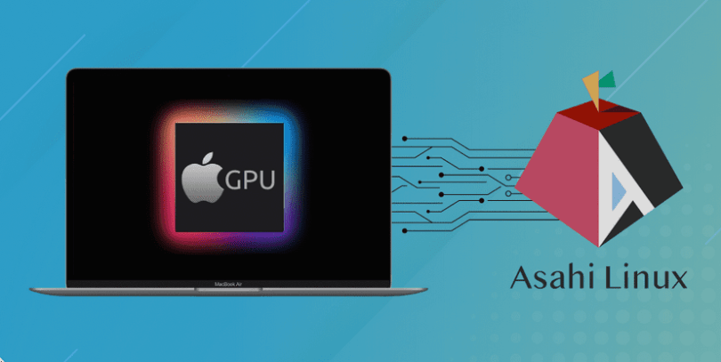

Veille technologique
Le projet Asahi Linux : un aperçu d'un projet informatique complet axé sur le développement
Qu'est-ce que le projet Asahi Linux :
Le projet Asahi Linux est un effort open-source pour porter Linux sur les appareils Apple Silicon.
Ce projet est passionnant car il touche à de nombreux domaines de l'informatique, notamment l'architecture
des systèmes, les pilotes de matériel, les systèmes d'exploitation et le développement de logiciels. Dans cette veille
technologique, nous allons nous concentrer sur les aspects de développement du projet Asahi Linux.
Ce projet est passionnant car il touche à de nombreux domaines de l'informatique, notamment l'architecture
des systèmes, les pilotes de matériel, les systèmes d'exploitation et le développement de logiciels. Dans cette veille
technologique, nous allons nous concentrer sur les aspects de développement du projet Asahi Linux.
Développement du noyau Linux:
Le projet Asahi Linux vise à porter Linux sur les appareils Apple Silicon, ce qui nécessite un développement approfondi du noyau Linux. Les développeurs du projet Asahi Linux ont dû écrire des pilotes de matériel pour les composants spécifiques à Apple, tels que le processeur, le GPU et le contrôleur de mémoire. Ils ont également dû optimiser le noyau Linux pour fonctionner sur les appareils Apple Silicon. Ce travail de développement est crucial pour permettre à Linux de fonctionner sur ces appareils.
Développement d'outils de développement :
Le projet Asahi Linux nécessite également le développement d'outils de développement pour permettre aux développeurs de construire et de tester leur travail. Les développeurs ont dû créer des outils pour construire des images de système d'exploitation, tester les pilotes de matériel et déboguer les problèmes. Ces outils sont essentiels pour permettre aux développeurs de travailler efficacement sur le projet Asahi Linux.

Développement de logiciels :
Le projet Asahi Linux vise à permettre aux utilisateurs d'exécuter des logiciels Linux sur les appareils Apple Silicon. Cela nécessite le développement de logiciels pour prendre en charge les fonctionnalités spécifiques à Apple, telles que le Touch ID et le Face ID. Les développeurs ont dû écrire des bibliothèques pour fournir ces fonctionnalités aux applications Linux. Ce travail de développement est crucial pour offrir une expérience utilisateur transparente sur les appareils Apple Silicon.
Conclusion :
Le projet Asahi Linux est un projet open-source passionnant qui touche à de nombreux domaines de l'informatique, notamment l'architecture des systèmes, les pilotes de matériel, les systèmes d'exploitation et le développement de logiciels. En se concentrant sur les aspects de développement du projet Asahi Linux, nous pouvons voir l'importance du développement du noyau Linux, des outils de développement et des logiciels pour permettre à Linux de fonctionner sur les appareils Apple Silicon. Ce projet est un excellent exemple de la façon dont le développement de logiciels open-source peut avoir un impact sur l'industrie informatique dans son ensemble.
Flux RSS :
Mes sources :
Site officiel du projet Asahi LinuxGit du projet Asahi Linux
Wiki du projet
Video qui résume le projet par la chaine Youtube Underscore_ :